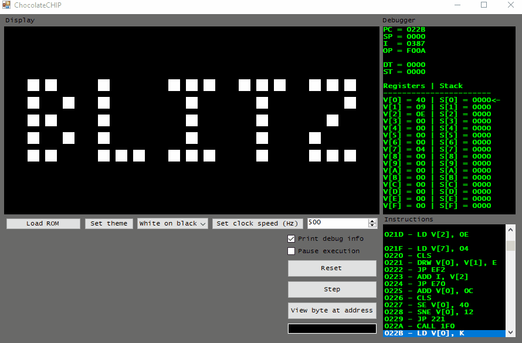

CHIP-8 Emulator

Summary
This is a basic CHIP-8 emulator implemented in C#. The frontend was designed using WinForms (gross, I know). It has several features which allow you to inspect the contents of the machine as it runs:
- A debug window which displays the following:
- Register contents
- Stack contents and stack pointer location
- Timer states
- Program counter address
- A window which displays the currently executing instruction and its address.
- A button which allows the user to view an arbitary byte of memory at a given address.
- Variable clock speed.
Compiling & Running
- Create a WinForms project in Visual Studio.
- Add the source code from the repository to your project.
- Build the project and load some ROMs.
Controls
The leftmost 16 keys of the keyboard (1 to 4, Q to R, A to F, and Z to V) act as the keypad of the CHIP-8. Different games use somewhat arbitrary bindings for the keypad.
Remarks
Interestingly, CHIP-8 never had native hardware designed for it - it was developed as an interpreted language run on a simple virtual machine. This allowed it to be run on early 8-bit computers which didn't have many games written for them at the time.
This design choice gives the CHIP-8 interpreter some unique quirks and leads to some minor differences between implentations of the interpeter. Firstly, many different games expect wildly different clock speeds for the virtual CPU. I assume this is due to the many decades worth of interpreters written for all sorts of different hardware (everything from 8-bit computers to calculators). This made having an adjustable clock speed a necessity for testing different games on the emulator.
Secondly, different interpreters handle the CHIP-8's draw code differently for pixels which are outside of the screen bounds. Some interpreters treat out-of-bounds pixels as no-ops (nothing happens for these pixels). Other interpreters (mine included) perform modulo operations on OOB pixels (this wraps them around to the other side of the screen). Either setting can break some games depending on which behavior they expect. For example, graphics wrapping in the BLITZ ROM causes an unintended game over due to the columns of pixels wrapping from the bottom edge to the top of the screen.
